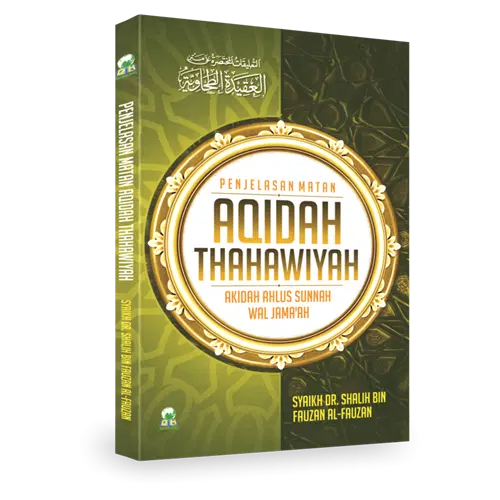
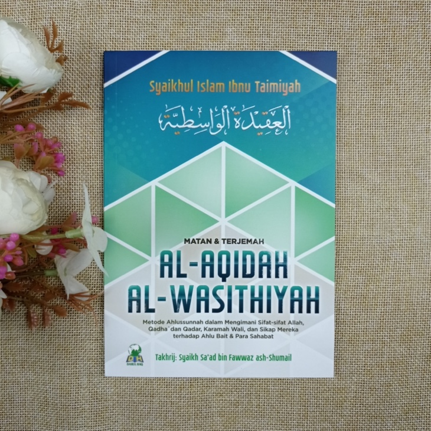
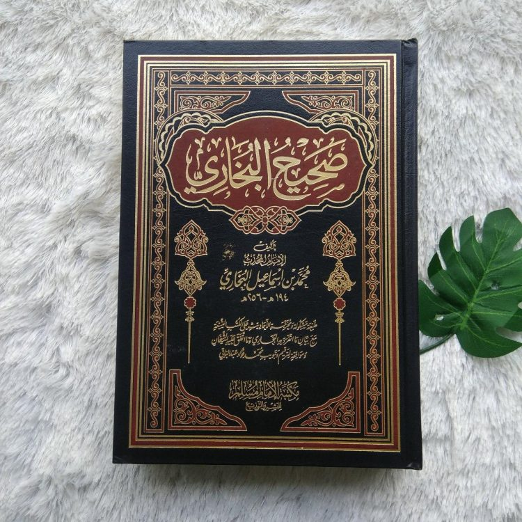
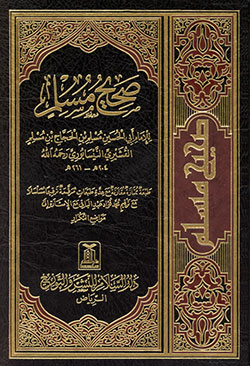

Bedah Buku: Negeri 5 Menara
Ditulis oleh: Ahmad Fuadi

Buku ini menceritakan perjalanan hidup Alif, seorang anak Minang yang menempuh pendidikan di pondok pesantren Madani.
Awalnya penuh keraguan, namun perlahan Alif menemukan makna perjuangan, persahabatan, dan kekuatan impian.
“Man Jadda Wajada – Siapa yang bersungguh-sungguh, dia akan berhasil.”
Kalimat itu menjadi semangat utama dalam buku ini. Kisah yang ditulis berdasarkan pengalaman nyata ini sangat menginspirasi,
terutama bagi pelajar yang sedang mengejar mimpi mereka. Penulis berhasil menyampaikan pesan-pesan moral melalui narasi yang hidup.
Buku ini cocok dibaca oleh remaja dan orang dewasa yang sedang mencari motivasi hidup. Cerita persahabatan, perjuangan, dan cinta belajar
membuatnya menyentuh dan relevan bagi pembaca di berbagai usia.
★
★
★
★
★
Bedah Buku: Al-‘Aqîdah ath-Thahâwiyyah
Ditulis oleh: Imam Abu Ja‘far Ahmad bin Muhammad bin Salamah al-Azdi ath-Thahawi

Al-‘Aqîdah ath-Thahâwiyyah adalah sebuah risalah aqidah yang ditulis untuk menjelaskan keyakinan Islam yang lurus sebagaimana diyakini oleh Rasulullah ﷺ, para sahabat, tabi‘in, dan para imam umat Islam, tanpa masuk ke dalam perdebatan filsafat atau logika yang rumit.
نَقُولُ فِي تَوْحِيدِ اللَّهِ مُعْتَقِدِينَ بِتَوْفِيقِ اللَّهِ: إِنَّ اللَّهَ وَاحِدٌ لَا شَرِيكَ لَهُ
Kitab ini tidak ditulis untuk berdebat, melainkan untuk:
Menjaga kemurnian aqidah
Menyatukan umat Islam di atas aqidah Ahlus Sunnah
Menjadi pegangan dasar bagi kaum muslimin agar tidak terjerumus ke dalam pemahaman menyimpang
Bahasanya singkat, tegas, dan padat, namun setiap kalimatnya memiliki makna aqidah yang dalam. Karena itulah kitab ini sangat sering dipelajari bersama syarah (penjelasan) dari para ulama.
Kitab Al-‘Aqîdah ath-Thahâwiyyah menceritakan dan menjelaskan pokok-pokok keimanan dalam Islam, mulai dari tauhid kepada Allah hingga sikap seorang muslim terhadap sesama muslim dan penguasa.
★
★
★
★
★
Bedah Buku: Al-Wasītīyah fī al-Aqīdah
Ditulis oleh: Imam Abū al-Ḥasan al-Ash‘arī

Kitab Al-‘Aqīdah al-Wāsiṭiyyah itu menceritakan dan menjelaskan apa saja pokok keyakinan (aqidah) Ahlus Sunnah wal Jamā‘ah, disusun secara ringkas tapi padat, langsung berdasar Al-Qur’an dan Sunnah.
الإيمان قول وعمل
(Iman adalah ucapan dan amalan)
Kitab ini ditulis untuk menjawab permintaan penduduk kota Wāsiṭ (Irak) yang meminta penjelasan aqidah Islam yang benar. Maka penulisnya menjelaskan aqidah Ahlus Sunnah tanpa filsafat, tanpa debat panjang, dan tanpa pendapat menyimpang.
Al-Wasītīyah fi al-Aqīdah adalah risalah aqidah yang ditulis Imam al-Ash‘arī sebagai penjelasan ringkas tentang keyakinan Ahlus Sunnah wal Jama‘ah. Kitab ini termasuk karya klasik yang menjadi pegangan banyak ulama, mahasiswa ilmu kalam, dan pengajar aqidah.
★
★
★
★
★
Bedah Buku: Shahîh al-Bukhârî
Ditulis oleh: Imam Abū ‘Abdillāh Muhammad bin Ismā‘īl al-Bukhārī

Shahîh al-Bukhârî adalah kitab hadits paling shahih dan paling tinggi kedudukannya dalam Islam setelah Al-Qur’an. Kitab ini berisi hadits-hadits Nabi Muhammad ﷺ yang diseleksi dengan syarat paling ketat di antara seluruh ulama hadits.
إِنَّمَا الأَعْمَالُ بِالنِّيَّاتِ، وَإِنَّمَا لِكُلِّ امْرِئٍ مَا نَوَى
Shahîh al-Bukhârî bukan hanya kumpulan hadits, tapi juga kitab fiqh, aqidah, adab, dan akhlak yang sangat mendalam. Imam al-Bukhârî menyusun hadits berdasarkan bab-bab tematik.
Imam al-Bukhârî:
Mengumpulkan hadits selama lebih dari 16 tahun
Menyeleksi sekitar 600.000 hadits
Hanya memasukkan sekitar 7.000 hadits (termasuk pengulangan)
Setiap hadits ditulis setelah shalat istikharah
Kitab ini diterima secara ijma‘ (kesepakatan ulama) sebagai rujukan utama hadits shahih oleh seluruh Ahlus Sunnah wal Jamā‘ah.
★
★
★
★
★
Bedah Buku: Shahih Muslim
Ditulis oleh: Imam Abū al-Ḥusain Muslim bin al-Ḥajjāj al-Qusyairī an-Naisābūrī

Shahîh Muslim adalah kitab hadits paling shahih kedua setelah Shahîh al-Bukhârî. Kitab ini berisi hadits-hadits Nabi Muhammad ﷺ yang diseleksi dengan standar keilmuan yang sangat ketat, sehingga diterima secara luas oleh para ulama Ahlus Sunnah wal Jamā‘ah.
إِنَّ اللَّهَ لَا يَنْظُرُ إِلَى صُوَرِكُمْ وَأَمْوَالِكُمْ، وَلَكِنْ يَنْظُرُ إِلَى قُلُوبِكُمْ وَأَعْمَالِكُمْ
Imam Muslim:
Mengumpulkan hadits dari ratusan ribu riwayat
Menyeleksi dengan syarat sanad yang kuat dan jelas
Menyusun hadits tanpa banyak pengulangan
Mengelompokkan hadits dengan rapi berdasarkan tema
Karena sistematikanya yang sangat tertata, Shahîh Muslim sering dianggap lebih mudah dipelajari dibanding Shahîh al-Bukhârî, khususnya bagi pemula.
Shahîh Muslim membahas seluruh aspek ajaran Islam, mulai dari aqidah, ibadah, akhlak, hingga mu‘amalah dan hari akhir.
★
★
★
★
★